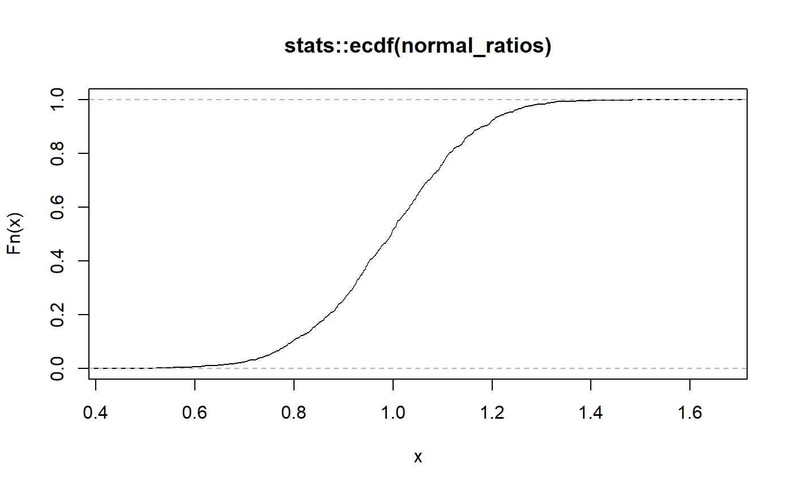
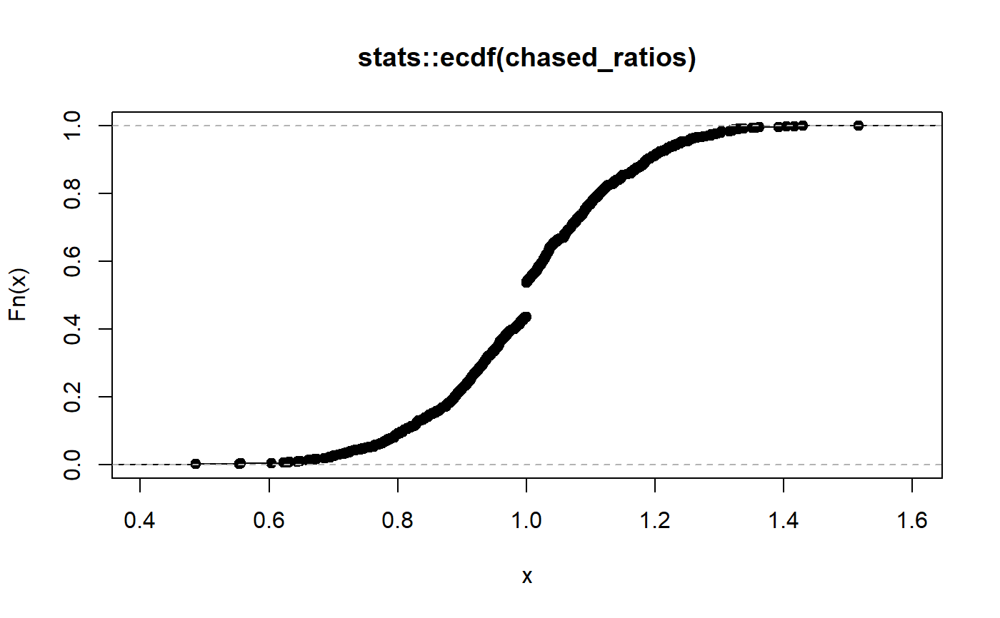

detect_chasing.RdSales chasing is when a property is selectively reappraised to shift its assessed value toward its actual sale price. Sales chasing is difficult to detect. This function is NOT a statistical test and does not provide the probability of the given result. Rather, it combines two novel methods to roughly estimate if sales chasing has occurred.
The first method (dist) uses the technique outlined in the IAAO Standard on Ratio Studies Appendix E, Section 4. It compares the percentage of real data within +-2 of the mean ratio to the percentage of data within the same bounds given a constructed normal distribution with the same mean and standard deviation. The intuition here is that ratios that are sales chased may be more "bunched up" in the center of the distribution.
The second method (cdf) detects discontinuities in the cumulative distribution function (CDF) of the input vector. Ratios that are not sales chased should have a fairly smooth CDF. Discontinuous jumps in the CDF, particularly around 1, may indicate sales chasing. This can usually be seen visually as a "flat spot" on the CDF.
detect_chasing(ratio, method = "both", na.rm = FALSE, ...) detect_chasing_cdf(ratio, bounds = c(0.98, 1.02), cdf_gap = 0.03, ...) detect_chasing_dist(ratio, bounds = c(0.98, 1.02), na.rm = FALSE, ...)
| ratio | A numeric vector of ratios centered around 1, where the numerator of the ratio is the estimated fair market value and the denominator is the actual sale price. |
|---|---|
| method | Default "both". String indicating sales chasing detection
method. Options are |
| na.rm | Default FALSE. A boolean value indicating whether or not to remove NA values. If missing values are present but not removed the function will output NA for those values. |
| ... | Named arguments passed on to methods. |
| bounds | Ratio boundaries to use for detection. The CDF method will return TRUE if the CDF gap exceeding the threshold is found within these bounds. The distribution method will calculate the percentage of ratios within these bounds for the actual data and an ideal normal distribution. Expanding these bounds increases likelihood of detection. |
| cdf_gap | Ratios that have bunched up around a particular value (typically 1) will appear as a flat spot on the CDF. The longer this flat spot, the worse the potential sales chasing. This variable indicates the length of that flat spot and can be thought of as the proportion of ratios that have the same value. For example, 0.03 means that 3 the same value. |
A logical value indicating whether or not the input ratios may have been sales chased.
detect_chasing_cdf: CDF gap method for detecting sales chasing.
detect_chasing_dist: Distribution comparison method
for detecting sales chasing.
# Generate fake data with normal vs chased ratios normal_ratios <- c(rnorm(1000, 1, 0.15)) chased_ratios <- c(rnorm(900, 1, 0.15), rep(1, 100)) # Plot to view discontinuity plot(stats::ecdf(normal_ratios))detect_chasing(normal_ratios)#> [1] FALSEdetect_chasing(chased_ratios)#> [1] TRUE